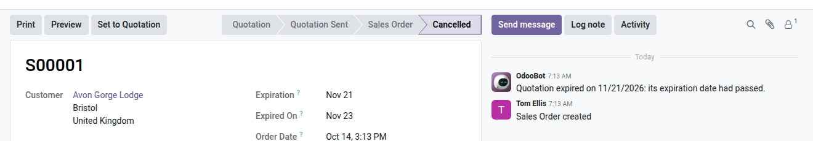
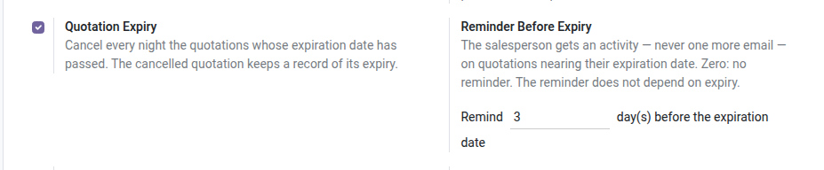
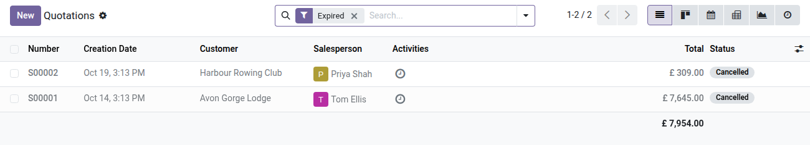

Expired Quotations
Expired quotations cancel themselves, and the salesperson gets a reminder before the deadline.
Odoo computes an expiration date on every quotation, can tell you it has expired… and does nothing about it. Dead quotations pile up in the funnel, inflate the pipeline amount and skew the forecasts. Nobody ever reopens them, and nobody follows up with the customer while there is still time.
What it adds
- ⏳ Automatic expiry: every night, quotations whose expiration date has passed are canceled, with a note in the record stating why and when.
- 🔔 A reminder to the salesperson a few days before the deadline, as an activity — never one more email.
- 🏢 Two independent settings, per company: a subsidiary that sells by the week and a parent company that sells by the quarter do not run at the same pace.
- 🔎 Two filters in the quotation search: "Expired" and "Expiring Soon".
Real screenshots
1. Expired, and the record says why
Past its expiration date, the quotation is cancelled during the night; the expiry date is on the form and the chatter keeps the reason.

2. Expiry and reminder, set apart
Expiry on or off, and the number of days before the deadline when the salesperson gets a reminder activity.

3. The expired quotations, in one filter
Expired and Expiring Soon join the quotation filters.

Why install it
- The reminder runs before the expiry in the same night: a quotation followed up in the morning and canceled in the evening would make the salesperson look like a liar to the customer.
- Locked quotations are never touched — a quotation that was deliberately frozen is not a forgotten quotation.
- The reminder is an activity, not an email: it lands in the salesperson's to-do list for the day, where one more email would have been lost.
- Open source module, LGPL-3 license — no subscription, no dependency beyond Sales.
Going further
Closing dead quotations cleans up the funnel; steering it takes more. The OdooSkills range covers quotation approval above a threshold, merging several quotations from the same customer, salesperson commissions and sales team segregation. Full catalog: apps.odooskills.com.
License LGPL-3 — compatible with Odoo 19.0 Community and Enterprise. Support: apps@odooskills.com.